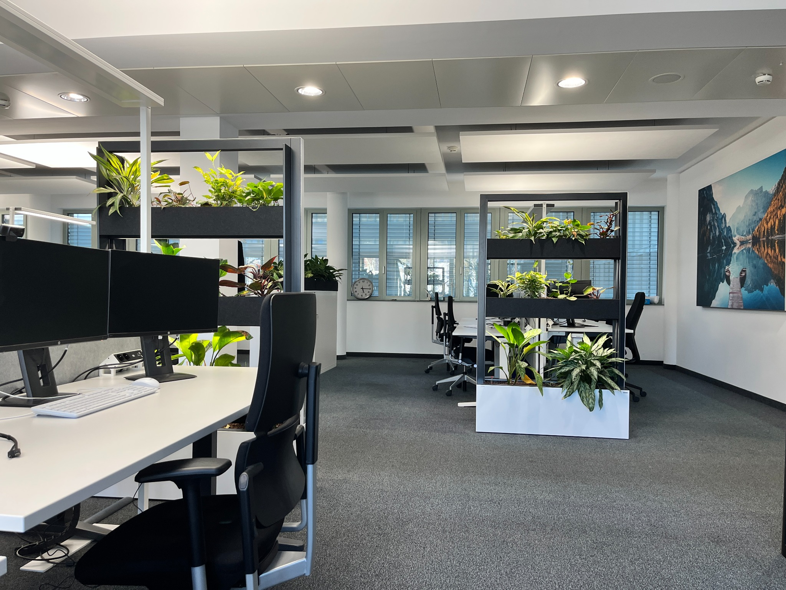

01 / Understand
Start with the problem.
I break down complex operational processes, clarify what is actually happening, and identify where the real bottleneck sits.
My professional identity sits between business, data and process. I like understanding how a system works before deciding how it should work better.

I break down complex operational processes, clarify what is actually happening, and identify where the real bottleneck sits.
I work with SQL, Python, Power BI, Power Query, Jira and enterprise systems to turn fragmented operational data into something people can use.
The goal is not a dashboard for its own sake. It is a clearer decision, a better workflow, less manual effort or a measurable improvement.
SRM University, Chennai, India
Production Management · Process & Cost Estimation · Computer Aided Manufacturing
View certificate →RWTH Aachen University, Germany
Management & Engineering in Computer Aided Mechanical Engineering, with AI & data analytics, machine learning and engineering.
View certificate →